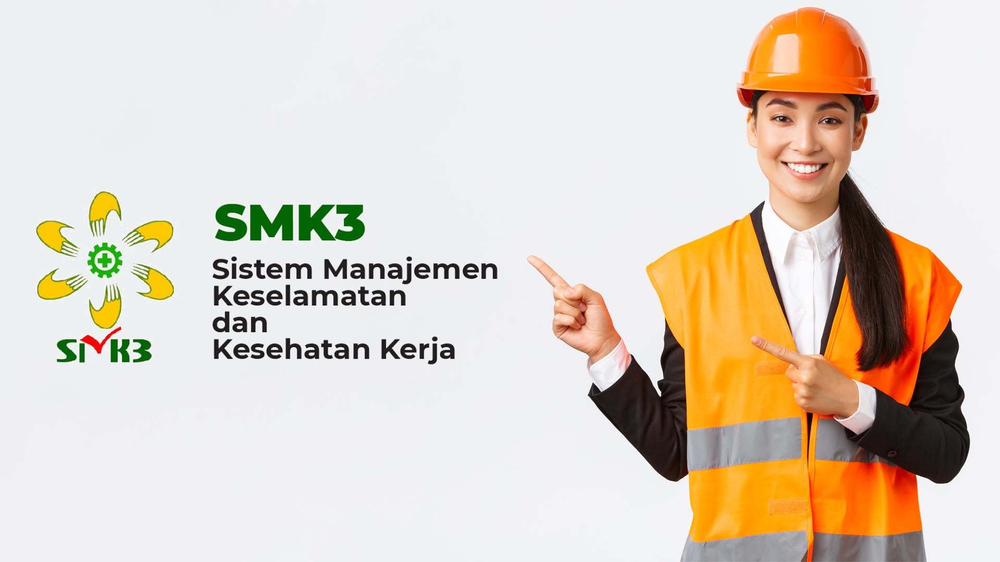

SMK3 & Manajemen Risiko
Gambaran Umum SMK3 PT INALUM
PT INALUM menerapkan Sistem Manajemen Keselamatan dan Kesehatan Kerja (SMK3) sesuai dengan ISO 45001:2018 dan Peraturan Pemerintah No. 50 Tahun 2012. Tanggung jawab pengelolaan Keselamatan dan Kesehatan Kerja (K3) dilakukan oleh Kepala Departemen Keselamatan, Kesehatan Kerja dan Lingkungan (K3L).
Untuk memastikan efektivitas penerapan SMK3 sesuai dengan persyaratan, Perusahaan secara rutin melakukan audit baik secara internal maupun eksternal dengan lingkup mencakup kegiatan peleburan aluminium dan pencetakan aluminium ingot, aluminium alloy dan aluminium billet dan pembangkit listrik tenaga air (PLTA).

Struktur Organisasi SMK3 PT INALUM
Organisasi Resmi
1. Direktur Utama
- Menetapkan kebijakan & strategi besar perusahaan terkait K3.
- Menyediakan sumber daya, anggaran & fasilitas penerapan K3.
- Mengawasi kinerja keselamatan secara keseluruhan.
2. Wakil Manajemen SMK3 / Manager K3
- Mengkoordinasikan penerapan SMK3 di seluruh unit.
- Melakukan evaluasi & audit internal pelaksanaan SMK3.
- Menyusun laporan kinerja & melapor kepada Direktur Utama.
3. Koordinator P2K3
- Penghubung manajemen ↔ tenaga kerja.
- Menyusun & menjalankan program kerja tahunan K3.
- Koordinasi rapat, sosialisasi & pelatihan K3.
- Menyusun rekomendasi & evaluasi keselamatan.
4. Kepala Operasi K3
- Penerapan SOP area operasi & tambang.
- Identifikasi bahaya dan control preventive.
- a. Supervisor Planning
- b. Supervisor Implementasi
- c. Pelaksana Operasi
5. Kepala Pemeliharaan & Teknik K3
- Maintenance alat & instalasi aman.
- Inspeksi berkala seluruh sistem.
- a. Supervisor Teknik
- b. Pelaksana Teknik
6. Kepala HSE (Health, Safety & Environment)
- Kepatuhan standar K3 + lingkungan.
- Kontrol gas, limbah & emisi.
- a. Supervisor Lingkungan
- b. Pelaksana HSE
7. Kepala Tanggap Darurat & Kebakaran
- Sistem evakuasi, pemadam, & simulasi emergency.
- a. Supervisor Darurat
- b. Pelaksana Darurat
8. Kepala Pengawasan K3 Pertambangan
- Inspeksi area tambang & risk detail
- a. Supervisor Pengawasan
- b. Pelaksana Pengawasan
9. Kepala Pelatihan & Kompetensi
- Pelatihan & sertifikasi POP/POM/POU.
- a. Supervisor Pelatihan
- b. Pelaksana Pelatihan
10. Inspektur Tambang (Eksternal)
- Audit & Pembinaan keselamatan tambang.
- Investigasi & rekomendasi perbaikan operasi.
Elemen SMK3
Elemen SMK3 di PT INALUM mengikuti prinsip Plan–Do–Check–Action dan disesuaikan dengan karakteristik industri peleburan aluminium dan pertambangan.
Kebijakan & Komitmen
- Pernyataan komitmen K3 oleh Direktur Utama.
- Penetapan visi “zero accident” di seluruh area kerja.
- Integrasi K3 dalam sasaran perusahaan dan kontrak kerja.
Perencanaan
- Identifikasi bahaya dan penilaian risiko (HIRARC).
- Penyusunan sasaran K3 tahunan tiap unit kerja.
- Perencanaan sumber daya, pelatihan, dan program inspeksi.
Implementasi & Operasi
- Penyusunan SOP aman untuk proses peleburan, handling logam cair, dan kegiatan tambang.
- Penyediaan APD & peralatan keselamatan sesuai standar.
- Pelatihan dan sosialisasi K3 bagi seluruh pekerja dan kontraktor.
Pemantauan & Pengukuran
- Inspeksi rutin area kerja, peralatan, dan perilaku kerja.
- Pencatatan kecelakaan, insiden, dan near miss.
- Monitoring lingkungan (debu, kebisingan, gas, limbah).
Audit & Tinjauan
- Audit internal SMK3 oleh tim K3 dan fungsi terkait.
- Tinjauan manajemen berkala terhadap kinerja K3.
- Tindak lanjut temuan audit dan rekomendasi Inspektur Tambang.
Perbaikan Berkelanjutan
- Perbaikan desain proses dan fasilitas kerja yang berisiko.
- Penguatan budaya pelaporan insiden dan safety talk harian.
- Revisi SOP dan program pelatihan berdasarkan tren kecelakaan.
Manajemen Risiko di PT INALUM
Berikut adalah contoh jenis risiko yang diidentifikasi di area peleburan aluminium PT INALUM beserta upaya mitigasi yang diterapkan untuk mengendalikan risiko tersebut.
| Jenis Risiko | Upaya Mitigasi |
|---|---|
| Risiko terjatuh dari ketinggian | Pengawasan melekat, work permit, instruksi kerja dan alat pelindung diri (APD) |
| Dehidrasi akibat paparan berlebihan, luka bakar akibat kontak dengan material yang dikeluarkan | Modernisasi peralatan, pengaturan rotasi pekerja SOP, pengawasan melekat dan alat pelindung diri (APD) |
| Dehidrasi akibat paparan berlebihan | Pengaturan rotasi pekerja, instruksi kerja, pengawasan melekat dan alat pelindung diri (APD) |
| Dehidrasi akibat paparan berlebihan, terjepit material saat mengganti teeth | Pengaturan rotasi pekerja, instruksi kerja, pengawasan melekat dan APD |
| Dehidrasi akibat paparan berlebihan, luka bakar akibat kontak dengan material yang dikeluarkan | Modernisasi peralatan, pengaturan rotasi pekerja, instruksi kerja, pengawasan melekat dan alat pelindung diri |
| Terjepit oleh produk billet yang jatuh | Modernisasi peralatan, instruksi kerja, pengawasan melekat dan alat pelindung diri (APD) |
| Menabrak material/fasilitas operasi lainnya | Pengawasan melekat dan instruksi kerja |
| Menabrak material/fasilitas operasi, terjepit oleh benda kerja yang jatuh | Pengawasan melekat dan instruksi kerja |
| Gangguan pernafasan oleh paparan berlebihan | Work permit, pengaturan rotasi pekerja, instruksi kerja, pengawasan melekat dan alat pelindung diri (APD) |
| Tenggelam di bawah permukaan air | Work permit, instruksi kerja, pengawasan melekat dan alat pelindung diri (APD) |
HIRARC: Identifikasi, Penilaian, & Pengendalian Risiko
PT INALUM menggunakan pendekatan HIRARC (Hazard Identification, Risk Assessment, and Risk Control) untuk mengendalikan risiko di setiap aktivitas kerja, mulai dari tapping logam cair, pengangkutan anoda, hingga kegiatan tambang dan PLTA.
1. Identifikasi Bahaya
Menggali semua potensi sumber bahaya: mekanik, listrik, bahan kimia, panas logam cair, debu, gas, ergonomi, dan bahaya lingkungan sekitar area operasi.
2. Penilaian Risiko
Menilai tingkat risiko berdasarkan kemungkinan (likelihood) dan konsekuensi (consequence), lalu mengelompokkannya ke dalam kategori rendah, sedang, tinggi, atau sangat tinggi.
3. Pengendalian Risiko
Menentukan langkah pengendalian sesuai hierarki: eliminasi, substitusi, rekayasa teknik, prosedur kerja & pelatihan, serta penggunaan APD sebagai lapisan terakhir.
Contoh HIRARC Sederhana
| Aktivitas | Bahaya | Dampak | Nilai Risiko Awal | Pengendalian | Nilai Risiko Sisa |
|---|---|---|---|---|---|
| Bekerja di ketinggian (scaffolding, platform) | Terjatuh dari ketinggian | Cedera berat hingga fatal | 3 (Kemungkinan) x 5 (Konsekuensi) = 15 (Tinggi) | Work permit untuk pekerjaan ketinggian, inspeksi scaffolding, penggunaan full body harness, safety net, pengawasan melekat, instruksi kerja yang jelas, dan APD lengkap. | 2 (Kemungkinan) x 5 (Konsekuensi) = 10 (Sedang) |
| Penanganan material panas di area furnace | Dehidrasi dan luka bakar akibat kontak dengan material panas | Luka bakar serius, heat stress | 4 (Kemungkinan) x 4 (Konsekuensi) = 16 (Tinggi) | Modernisasi peralatan dengan sistem otomatis, pengaturan rotasi pekerja, SOP penanganan material panas, pengawasan melekat, penyediaan area istirahat ber-AC, dan APD tahan panas lengkap. | 2 (Kemungkinan) x 4 (Konsekuensi) = 8 (Sedang) |
Matriks Risiko & Contoh Penilaian
Matriks risiko digunakan untuk mengkombinasikan nilai kemungkinan (likelihood) dan konsekuensi (consequence) sehingga diperoleh tingkat risiko yang mudah dipahami oleh manajemen dan pekerja.
Contoh Matriks 5x5
| Kemungkinan | Konsekuensi | ||||
|---|---|---|---|---|---|
| 1 Kecil |
2 Ringan |
3 Sedang |
4 Berat |
5 Fatal |
|
| 5 Sangat sering |
Tinggi | Tinggi | Tinggi | Sangat Tinggi | Sangat Tinggi |
| 4 Sering |
Sedang | Sedang | Tinggi | Tinggi | Sangat Tinggi |
| 3 Cukup sering |
Rendah | Sedang | Sedang | Tinggi | Tinggi |
| 2 Jarang |
Rendah | Rendah | Sedang | Sedang | Tinggi |
| 1 Sangat jarang |
Rendah | Rendah | Rendah | Sedang | Sedang |
Contoh Penilaian Risiko
Misal aktivitas: pembersihan kerak di dekat launder logam cair.
- Bahaya: terpeleset dan jatuh ke arah percikan logam cair.
- Kemungkinan: 3 (cukup sering) bila housekeeping buruk dan lantai licin.
- Konsekuensi: 4 (berat) karena potensi luka bakar serius.
- Nilai risiko: 3 x 4 = 12 → kategori Tinggi, perlu tindakan pengendalian segera.
Setelah dilakukan perbaikan lantai, pemasangan guard rail, SOP izin kerja, dan penerapan APD lengkap, kemungkinan dapat turun menjadi 2 sehingga nilai risiko menjadi 8 (Sedang).